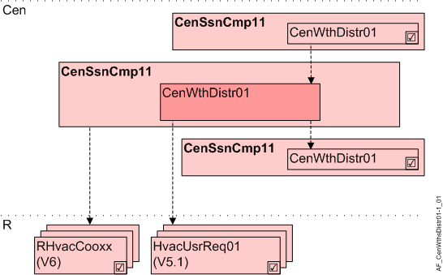

Central weather data distribution, Desigo TRA V5.1 (CenWthDstr01)
Overview
The application function "Central weather data distribution 01, Desigo TRA V5.1" (CenWthDstr01) collects the values for outside air temperature and humidity and forwards them to rooms with Desigo V5.1 / V5.1 SP functionality or to subsequent central AFs CenWthDstr01.

Cen | Central |
CenSsnCmp11 | Central seasonal compensation 11, summer/winter compensation, with central outside air temperature |
R | Room |
ROpMod11 | Room operating mode determination 11, with comfort button |
RHvacCooxx | Room HVAC coordination set 11, for fan coil unit, radiant ceiling, radiator, radiant floor / 12 / 13 / 17 |
HvacUsrReq01 | HVAC user request 01 |
Function
The outside air temperature and the outside air humidity are distributed to AFNHvacUsrReq01 (V5.1) or to subsequent central AFs CenWthDstr01. This function is used if setpoints in rooms V5.1 are coordinated with the central seasonal compensation application (CenSsnCmp11). It is an optional part of AF CenSsnCmp11.
Hierarchical grouping
This AF supports hierarchical grouping. For detailed information, see Hierarchical grouping.
Interface to local and superordinate functions
Description | Object | Type | Source | Evaluation in case of hierarchical grouping |
|---|---|---|---|---|
Relative outside humidity | HuRelOa | AI | From weather station | superordinate AF wins, HuRelOaVal is used |
Relative outside humidity value | HuRelOaVal | ACalcVal | From optional superordinate AF CenWthDstr01 | |
Outside temperature | TOa | AI | From weather station / AF CenSsnCmp11 | superordinate AF wins, TOaVal is used |
Outside air temperature value | TOaVal | ACalcVal | From optional superordinate AF CenWthDstr01 |
Configuration
None.
Interface
Interface | Description | Type | Ref. | Owned by |
|---|---|---|---|---|
HuRelOa | Relative outside humidity | AI | ◉ | Central function / Device |
HuRelOaVal | Relative outside humidity value | ACalcVal | ● | - |
TOaVal | Outside air temperature value | ACalcVal | ● | - |
CenSsnCmpMst | Manager for central seasonal compensation | GrpMaster | ◉ | Central function / Device |
Engineering and commissioning
Hierarchical grouping:
- Recommended for large networks.
- To support hierarchical grouping, CenWthDstr01 has to be activated in both the superior AF CenSsnCmp11 as well as in the subsequent AF CenSsnCmp11.
Note: HuRelOa is connected here in AF CenWthDstr01, whereas TOa is connected in the superior AF CenSsnCmp11.